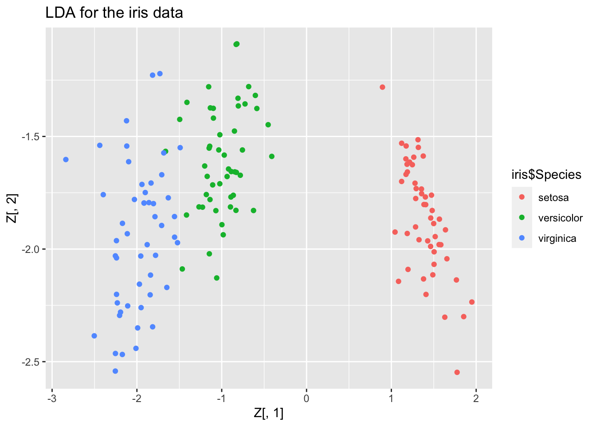
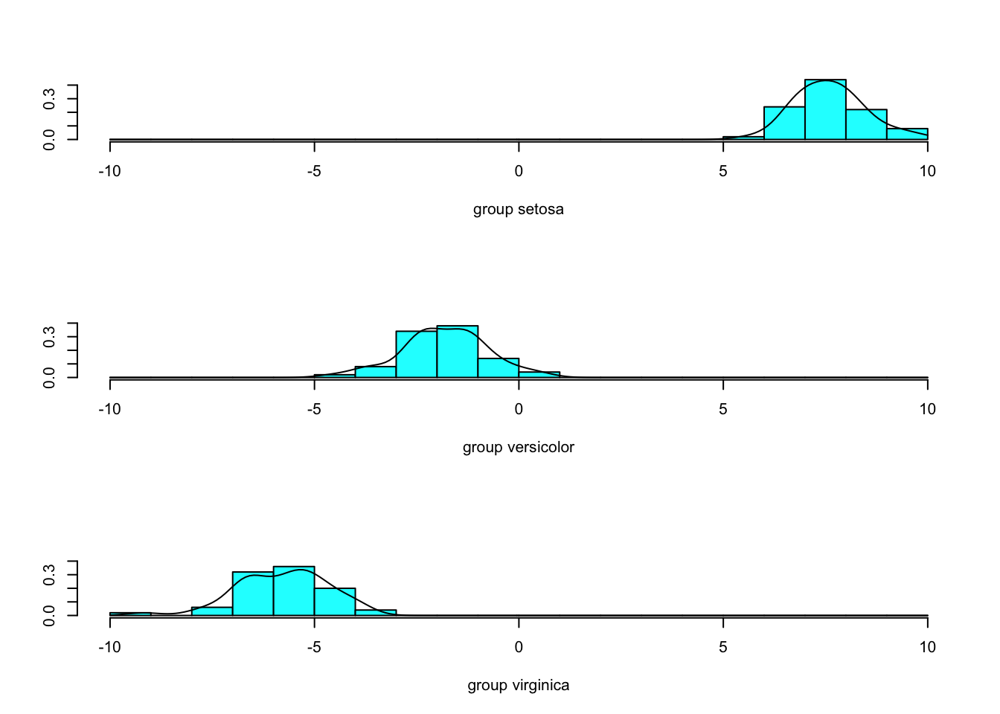
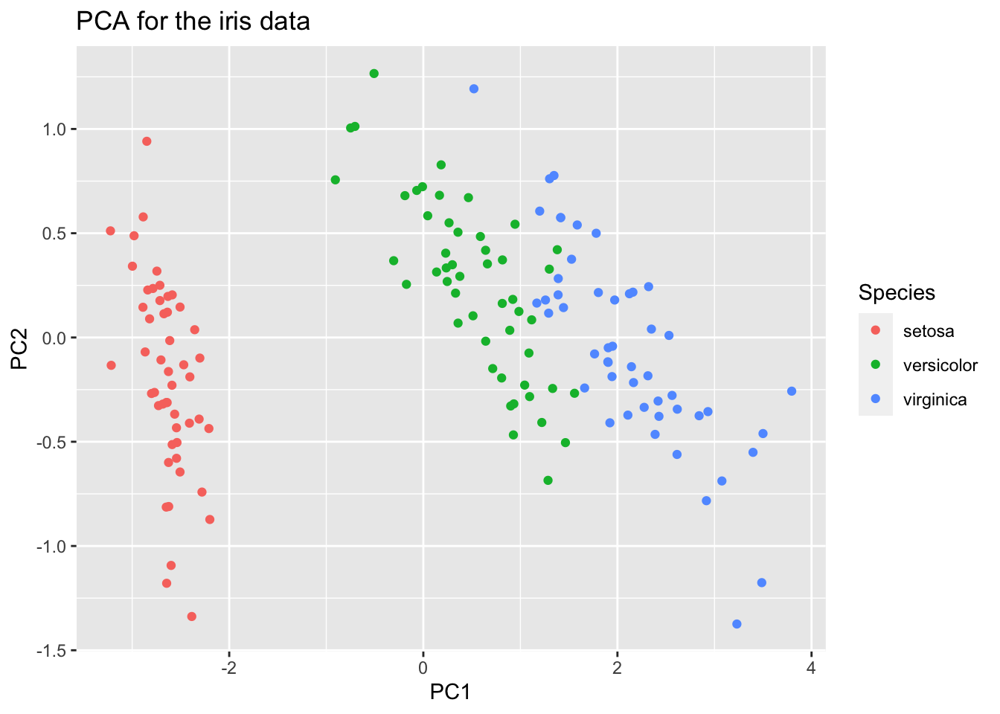

2.1 Fisher’s linear discriminant rule
USEFUL AS DIMENNION REUDCTION
Thus far we have assumed that observations from population \(\Pi_j\) have a \(N_p ( \boldsymbol{\mu}_j, {\mathbf \Sigma})\) distribution, and then used the MVN log-likelihood to derive the discriminant functions \(\delta_j(\mathbf x)\). The famous statistician R. A. Fisher took an alternative approach and looked for a linear discriminant functions without assuming any particular distribution for each population \(\Pi_j\).
Variance decomposition
Suppose we have a training sample \(\mathbf x_{1,j}, \ldots, \mathbf x_{n_j,j}\) from \(\Pi_j\) for \(j=1,\ldots,g\). Fisher’s approach starts by splitting the total covariance matrix of the data (i.e. ignoring class labels) into two parts.
\[\begin{align*} n\mathbf S=\mathbf X^\top\mathbf H\mathbf X&= \sum_{j=1}^g\sum_{i=1}^{n_j} (\mathbf x_{i,j} - \bar{\mathbf x})(\mathbf x_{i,j} - \bar{\mathbf x})^\top\\ &=\sum_{j=1}^g\sum_{i=1}^{n_j} (\mathbf x_{i,j} - \hat{{\boldsymbol{\mu}}}_j+\hat{{\boldsymbol{\mu}}}_j-\bar{\mathbf x})(\mathbf x_{i,j} - \hat{{\boldsymbol{\mu}}}_j+\hat{{\boldsymbol{\mu}}}_j-\bar{\mathbf x})^\top\\ &= \sum_{j=1}^g\sum_{i=1}^{n_j} (\mathbf x_{i,j} - \hat{{\boldsymbol{\mu}}}_j)(\mathbf x_{i,j} - \hat{{\boldsymbol{\mu}}}_j)^\top+ \sum_{j=1}^g n_j (\hat{{\boldsymbol{\mu}}}_j-\bar{\mathbf x})(\hat{{\boldsymbol{\mu}}}_j-\bar{\mathbf x})^\top\\ &=\mathbf W+\mathbf B \end{align*}\] where \(\hat{{\boldsymbol{\mu}}}_j=\frac{1}{n_j} \sum \mathbf x_{i,j} = \bar{\mathbf x}_{+,j}\) is the sample mean of the \(j\)th group, \(\bar{\mathbf x} = \frac{1}{n} \sum_{j=1}^g \sum_{i=1}^{n_j} \mathbf x_{ij}\) is the overall mean, and \(n=\sum_{j=1}^g n_j\).
MAKE nW+nB??????
This has split the total sum of squares matrix into a within-class sum of squares matrix \[ \mathbf W= \sum_{j=1}^g \sum_{i=1}^{n_j} (\mathbf x_{ij} - \hat{{\boldsymbol{\mu}}}_j) (\mathbf x_{ij} - \hat{{\boldsymbol{\mu}}}_j)^\top = \sum_{j=1}^g n_j \mathbf S_j \] and a between-class sum of squares matrix \[ \mathbf B= \sum_{j=1}^g n_j (\hat{{\boldsymbol{\mu}}}_j - \bar{\mathbf x}) (\hat{{\boldsymbol{\mu}}}_j - \bar{\mathbf x})^\top.\]
Note that
The \(\frac{1}{n} \mathbf W\) is an estimator of \(\boldsymbol{\Sigma}\), the shared covariance matrix in the MVN distributions for each population (c.f. Equation. (1.4)).
If \(\mathbf M\) is a \(n \times p\) matrix of estimated class centroids for each observation \[\mathbf M= \begin{pmatrix} -& \hat{{\boldsymbol{\mu}}}_1 &-\\ &\vdots &\\ -& \hat{{\boldsymbol{\mu}}}_1 &-\\ -& \hat{{\boldsymbol{\mu}}}_2 &-\\ &\vdots&\\ -& \hat{{\boldsymbol{\mu}}}_g &-\\ &\vdots &\\ -& \hat{{\boldsymbol{\mu}}}_g &-\end{pmatrix}\] then \(\frac{1}{n}\mathbf B=\frac{1}{n}\mathbf M^\top\mathbf H\mathbf M\) is the covariance matrix of \(\mathbf M\).
We thus think of this as splitting the total covariance matrix (ignoring class information) into within-class and between-class covariance matrices: \[\mathbf S= \frac{1}{n}\mathbf W+ \frac{1}{n}\mathbf B\]
where \(\bar{\mathbf x}_j= \frac{1}{n_j} \sum_{i=1}^{n_j} \mathbf x_{ij}\) is the sample mean of the \(j\)th group. A
Fisher’s criterion
Fisher’s approach was to find a projection of the data \(z_i = \mathbf a^\top \mathbf x_i\) or \[\mathbf z= \mathbf X\mathbf a\] that maximizes the between-class variance relative to the within-class variance.
Using the variance decomposition from above, we can see that the total variance of \(\mathbf z\) is \[\begin{align*} \frac{1}{n}\mathbf z^\top \mathbf H\mathbf z&= \frac{1}{n}\mathbf a^\top \mathbf X^\top\mathbf H\mathbf X\mathbf a\\ &=\frac{1}{n} \mathbf a^\top \mathbf S\mathbf a\\ &= \frac{1}{n} \mathbf a^\top\mathbf W\mathbf a+\frac{1}{n} \mathbf a^\top\mathbf B\mathbf a\\ \end{align*}\] decomposed into the within-class variance of \(\mathbf z\) and the between-class variance \(\mathbf z\).
Fisher’s criterion is to choose a vector, \(\mathbf a\), to maximise the ratio of the between-class variance relative to the within-class variance of \(\mathbf z=\mathbf X\mathbf a\), i.e., to solve \[\begin{equation} \max_{\mathbf a}\frac{\mathbf a^\top \mathbf B\mathbf a}{\mathbf a^\top \mathbf W\mathbf a}, \tag{2.1} \end{equation}\]
The idea behind this is that this choice of \(\mathbf a\) will make the classes most easily separable.
FIGURE FIGURE???
An equivalent optimization problem is
Solving the optimization problem
How do we solve the optimization problem (2.1) and find the optimal choice of \(\mathbf a\)?
Proof. Firstly, note that an equivalent optimization problem is
\[\begin{align*} \mbox{Maximize } &\mathbf a^\top \mathbf B\mathbf a\\ \mbox{ subject to } &\mathbf a^\top \mathbf W\mathbf a=1 \end{align*}\]
as we can rescale \(\mathbf a\) without changing the objective (2.1). This looks a lot like the optimization problems we saw in the chapters on PCA and CCA.
To solve this, note that if we write \(\mathbf b=\mathbf W^{\frac{1}{2}}\mathbf a\) then the optimization problem becomes
\[\begin{align*} \mbox{Maximize } &\mathbf b^\top \mathbf W^{-\frac{1}{2}}\mathbf B\mathbf W^{-\frac{1}{2}}\mathbf b\\ \mbox{ subject to } &\mathbf b^\top \mathbf b=1. \end{align*}\] Proposition ?? tells us that the maximum is obtained when \(\mathbf b=\mathbf v_1\), where \(\mathbf v_1\) is the eigenvector of \(\mathbf W^{-\frac{1}{2}}\mathbf B\mathbf W^{-\frac{1}{2}}\) corresponding to the largest eigenvalue \(\lambda_1\).
Converting back to \(\mathbf a\) gives the solution to the original optimization problem (2.1) to be \[\mathbf a= \mathbf W^{-\frac{1}{2}}\mathbf v_1\]
Note that this is an eigenvalue of \(\mathbf W^{-1}\mathbf B\)
\[\begin{align*} \mathbf W^{-1}\mathbf B\mathbf a&= \mathbf W^{-1}\mathbf B\mathbf W^{-\frac{1}{2}}\mathbf v_1 \\ &= \mathbf W^{-\frac{1}{2}}\mathbf W^{-\frac{1}{2}}\mathbf B\mathbf W^{-\frac{1}{2}}\mathbf v_1\\ &= \lambda_1\mathbf W^{-\frac{1}{2}}\mathbf v_1\\ &= \lambda_1 \mathbf a \end{align*}\]
Finally, to complete the proof we should check that \(\mathbf W^{-1}\mathbf B\) doesn’t have any larger eigenvalues, but we can do this by showing that its eigenvalues are the same as the eigenvalues of \(\mathbf W^{-\frac{1}{2}}\mathbf B\mathbf W^{-\frac{1}{2}}\). This is left as an exercise (note we’ve already done one direction - all you need to do is show that if \(\mathbf W^{-1}\mathbf B\) has eigenvalue \(\lambda\) then so does \(\mathbf W^{-\frac{1}{2}}\mathbf B\mathbf W^{-\frac{1}{2}}\)).
Fisher’s discriminant rule
WHAT IF WE HAVE MORE THAN ONE dimension??
The function \(L(\mathbf z)=\mathbf a^\top \mathbf z\) is called Fisher’s linear discriminant function. Once \(L(\mathbf z)\) has been obtained, we allocate \(\mathbf z\) to the \(\Pi_j\) whose discriminant score \(L(\bar{\mathbf x}_j)\) is closest to \(L(\mathbf z)\), that is, allocate \(\mathbf z\) to \(\Pi_j\) iff \[ | \mathbf a^\top \mathbf z- \mathbf a^\top \bar{\mathbf x}_j | = \min\limits_{1 \leq k \leq g} | \mathbf a^\top \mathbf z- \mathbf a^\top \bar{\mathbf x}_k |. \]
When \(g=2\), Fisher’s rule and the sample ML rule with \(\boldsymbol{\Sigma}_1=\boldsymbol{\Sigma}_2=\boldsymbol{\Sigma}\) turn out to be the same. Note that in the sample ML rule we assumed that the two groups are from \(N_p({\boldsymbol{\mu}}_i, \boldsymbol{\Sigma})\) populations, but Fisher’s rule makes no such assumption.
Proof. First, note that \[\begin{eqnarray*} \bar{\mathbf x}_1 - \bar{\mathbf x} &=& \bar{\mathbf x}_1 - \left(\frac{n_1 \bar{\mathbf x}_1 + n_2 \bar{\mathbf x}_2}{n_1+n_2} \right) = \frac{ (n_1+n_2) \bar{\mathbf x}_1 - n_1 \bar{\mathbf x}_1 - n_2 \bar{\mathbf x}_2 }{n_1+n_2} \\ &=& \frac{ n_2 (\bar{\mathbf x}_1 - \bar{\mathbf x}_2) }{n_1 + n_2} = \frac{n_2 \mathbf d}{n_1+n_2} \end{eqnarray*}\] where \(\mathbf d= \bar{\mathbf x}_1 - \bar{\mathbf x}_2\). By analogy \(\bar{\mathbf x}_2 - \bar{\mathbf x} = \frac{n_1 (-\mathbf d)}{n_1+n_2}\). Therefore, \[\begin{eqnarray*} \mathbf B&=& n_1 (\bar{\mathbf x}_1 - \bar{\mathbf x})(\bar{\mathbf x}_1 - \bar{\mathbf x})^\top + n_2 (\bar{\mathbf x}_2 - \bar{\mathbf x})(\bar{\mathbf x}_2 - \bar{\mathbf x})^\top \\ &=& \frac{n_1 n_2^2}{(n_1+n_2)^2} \mathbf d\mathbf d^\top + \frac{n_2 n_1^2}{(n_1+n_2)^2} (-\mathbf d)(-\mathbf d)^\top \\ &=& \frac{n_1 n_2 (n_1 + n_2)}{(n_1+n_2)^2} \mathbf d\mathbf d^\top = \frac{n_1 n_2}{n_1+n_2} \mathbf d\mathbf d^\top. \end{eqnarray*}\] Let \(c = \frac{n_1 n_2}{n_1+n_2}\). Now \(\mathbf a\) is an eigenvector of \(\mathbf W^{-1} \mathbf B= c \mathbf W^{-1} \mathbf d\mathbf d^\top\). Also, the non-zero eigenvalues of \(c \mathbf W^{-1} \mathbf d\mathbf d^\top\) are the same as the non-zero eigenvalues of \(c \mathbf d^\top \mathbf W^{-1} \mathbf d\), which is scalar and so itself is the only non-zero eigenvalue. The eigenvector, \(\mathbf a\), must then satisfy \[ c \mathbf W^{-1} \mathbf d\mathbf d^\top \mathbf a= c \mathbf d^\top \mathbf W^{-1} \mathbf d\mathbf a. \] If we choose \(\mathbf a= \mathbf W^{-1} \mathbf d\) then the equation is satisfied. Hence \(\mathbf a= \mathbf W^{-1} (\bar{\mathbf x}_1 - \bar{\mathbf x}_2)\).
Let \(r = \mathbf a^\top \mathbf z\), \(s = \mathbf a^\top \bar{\mathbf x}_1\) and \(t = \mathbf a^\top \bar{\mathbf x}_2\), then Fisher’s rule allocates \(\mathbf z\) to \(\Pi_1\) if and only if \[\begin{eqnarray*} &&| r-s | < | r-t | \\ &\iff & (r-s)^2 < (r-t)^2 \\ &\iff & r^2 - 2rs + s^2 < r^2 - 2rt + t^2 \\ &\iff & 0 < 2r(s-t) + t^2 - s^2 \\ & \iff & 0 < 2r(s-t) + (t-s)(t+s) \\ & \iff & 0 < (s-t)(2r-t-s) \end{eqnarray*}\] Now \(s-t = \mathbf a^\top (\bar{\mathbf x}_1 - \bar{\mathbf x}_2) = \mathbf d^\top \mathbf W^{-1} \mathbf d\) which is a quadratic form and must therefore be positive, because \(\mathbf W\) is assumed to be positive definite. Hence Fisher’s rule allocates \(\mathbf z\) to \(\Pi_1\) if \[\begin{eqnarray*} && (2r-s-t) > 0\\ &\iff & r - \frac{1}{2}(s+t) > 0 \\ &\iff & \mathbf a^\top \left(\mathbf z- \frac{1}{2}(\bar{\mathbf x}_1 + \bar{\mathbf x}_2) \right)> 0 \\ &\iff & (\bar{\mathbf x}_1 - \bar{\mathbf x}_2)^\top \mathbf W^{-1} \left(\mathbf z- \frac{1}{2}(\bar{\mathbf x}_1 + \bar{\mathbf x}_2) \right)> 0 \\ &\iff & (\bar{\mathbf x}_1 - \bar{\mathbf x}_2)^\top \widehat{\boldsymbol{\Sigma}}^{-1} \left(\mathbf z- \frac{1}{2}(\bar{\mathbf x}_1 + \bar{\mathbf x}_2) \right)> 0 \end{eqnarray*}\] where the last line follows since \(\mathbf W= (n_1 + n_2 - 2)\widehat{\boldsymbol{\Sigma}}\). This is equivalent to the sample ML rule for \(g=2\).For \(g > 2\), the sample ML rule and Fisher’s linear rule will not, in general, be the same. Fisher’s rule is linear when \(g>2\) and is easier to implement than ML rules when there are several populations. It is often reasonable to use Fisher’s rule for non-normal populations. In particular, Fisher’s rule requires fewer assumptions than ML rules. However, the ML rule is `optimal’ in some sense when its assumptions are valid.
library(vcvComp)
B=cov.B(iris3[,1:2], iris3[,3])
W=cov.W(iris3[,1:2], iris3[,3]) # check this
(iris.eig <- eigen(solve(W)%*% B))## eigen() decomposition
## $values
## [1] 10.73851 0.00000
##
## $vectors
## [,1] [,2]
## [1,] 0.6603352 0.2758444
## [2,] -0.7509710 0.9612023## [1] -0.8793085## [1] -0.8793085library(vcvComp)
B=cov.B(iris[,1:4], iris[,5])
W=cov.W(iris[,1:4], iris[,5]) # check this
(iris.eig <- eigen(solve(W)%*% B))## eigen() decomposition
## $values
## [1] 4.732214e+01 4.195248e-01 1.426781e-14 6.229462e-16
##
## $vectors
## [,1] [,2] [,3] [,4]
## [1,] 0.2087418 -0.006531964 -0.4157360 -0.7486283
## [2,] 0.3862037 -0.586610553 -0.1604104 0.4258825
## [3,] -0.5540117 0.252561540 -0.2331638 0.4442065
## [4,] -0.7073504 -0.769453092 0.8643302 -0.2466988# note this is a rank 2 matrix
V <- iris.eig$vectors[,1:2]
Z <- as.matrix(iris[,1:4])%*% V
iris.pca = prcomp(iris[,1:4])
iris$PC1=iris.pca$x[,1]
iris$PC2=iris.pca$x[,2]
library(ggplot2)
qplot(PC1, PC2, colour=Species, data=iris,main ="PCA for the iris data")
 We can also plot the classification regions
M <- aggregate(iris[, 1:4], list(iris$Species), mean)[,2:5]
MV <- as.matrix(M)%*%V
library(pracma)
xplt <- meshgrid(seq(-3,2,0.02), seq(-3,0,0.02))
Xplt <- cbind(c(xplt$X), c(xplt$Y))
Yplt <- apply(Xplt, 1, function(x){
which.min(as.matrix(dist(rbind(MV, x), upper=TRUE, diag=TRUE))[4,1:3])
})
plot(Z[,1], Z[,2], col=iris$Species)
points(MV[,1], MV[,2], pch=16,cex=2, col=1:3)
points(Xplt[,1], Xplt[,2], col=Yplt, cex=0.1)
Comment on both LDA directions…………??????????

As you can see, there are three distinct groups with some overlap between virginica and versicolor. Plotting again, but adding the code dimen = 1 will only plot in one dimension (LD1). Think of it as a projection of the data onto LD1 with a histogram of that data.

Multiple projections
tr (AWA….)
Can do at most g-1 …..?????? Gives us way to illustrate visualise……
https://rstudio-pubs-static.s3.amazonaws.com/298913_9bd76dd24a9241cfa112d19a5e50610e.html
library(MASS)
fit.LDA = lda( Species ~ Sepal.Length + Sepal.Width + Petal.Length + Petal.Width, iris)
fit.LDA
predict(fit.LDA)
plot(fit.LDA)
plot(fit.LDA, col = as.integer(iris$Species))
summary(fit.LDA)
plot(fit.LDA, dimen = 1, type = "b")
library(klaR)
partimat(Species ~ Sepal.Length + Sepal.Width + Petal.Length + Petal.Width, data=iris, method="lda")2.1.1 Links between LDA, Fisher’s Discriminant Analysis, CCA, and linear models
Same as linear regression….
iris3$pm1 <- as.integer(iris3$Species)-2
# convert to +1 and -1
iris3.lm <- lm(pm1~Sepal.Length+Sepal.Width, iris3)
coef(iris3.lm)[2]/coef(iris3.lm)[3]## Sepal.Length
## -0.8793085